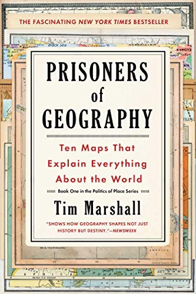

Library › History
Prisoners of Geography - Summary & Key Lessons

Ten maps that tell you everything you need to know about global politics. The land is the boss.
📖 OPEN THE FULL INTERACTIVE BREAKDOWN →🌐 Read it in Hindi, Hinglish, Gujarati, Tamil & 22 more languages - free, with audio.
💡 The Big Idea
Marshall tours ten regions and shows the terrain under the headlines. Russia's fear of invasion across the North European Plain drives Ukraine; China's core is the fertile east and its navy is bottled by the first island chain; the US is the geographically blessed superpower (two oceans, farmland, rivers); Africa's rivers and coastline frustrate trade; the Middle East's rivers and oil make it eternally contested. The argument is not determinism but constraint: leaders are prisoners of geography, forced choices repeat, and to understand the news you must look at what the map forces.
🧠 The 10 Key Lessons
Lesson 1: Russia: The Fear of the Plain
Russia
No natural barriers guard Russia's western approaches: the vast North European Plain has funnelled invaders for centuries (Poland, Sweden, Napoleon, Hitler). Ukraine, the Caucasus and buffer states are existential, not opportunistic, in Moscow's map.
📖 Example: Russia's actions in Crimea and eastern Ukraine read as defense-in-depth to Moscow: warm-water ports plus flatland buffers. Read the full example →
⚡ Do this: Before judging any nation's move, draw its terrain: what invasion route or resource bottleneck is it managing?
Lesson 2: China: The Middle Kingdom's Bottleneck
China
China's wealth sits on its accessible east coast; its navy must pass the first island chain (Japan, Taiwan, Philippines) to reach the Pacific, and its oil comes by sea through chokepoints others control. Taiwan is a map problem, not just an ideology problem.
📖 Example: China's island-building in the South China Sea is geography surgery: buying an opening in the chain that nature closed. Read the full example →
⚡ Do this: Watch chokepoints, straits, canals, chains: they explain military spending better than any speech.
Lesson 3: The United States: Geography's Favourite Child
United States
Two oceans, two friendly neighbours, the world's best farmland and navigable rivers: the US is nearly invasion-proof and internally integrated. Its power rests on a map almost nobody matches.
📖 Example: The Mississippi system moves grain to the Gulf for pennies, an internal logistics gift that made US food power structural. Read the full example →
⚡ Do this: List your own 'two oceans and a Mississippi': the structural advantages you inherit. Play to them instead of copying others' strategies.
Lesson 4: Europe: Rivers, Plains and Consequences
Western Europe
Europe's navigable rivers and moderate climate built trade states; its plains built wars. Germany's centre position made it both the prize and the problem; the EU is partly an attempt to solve geography with law.
📖 Example: France and Germany's industrial cores sit on the same coal and rivers that made them fight: the EU turned a battlefield into a market. Read the full example →
⚡ Do this: Institutions can soften geography but rarely erase it: know which of your conflicts are structural and need structures, not speeches.
Lesson 5: Africa: The Hard Map
Africa
Africa's coastline offers few natural harbours, its rivers fall from plateaus in waterfalls that block navigation, and disease shaped settlement: the map obstructed trade, integration and state formation. Geography is a heavy part of the story, not an excuse.
📖 Example: The Congo's mouth is unnavigable inland for miles: the world's greatest river network ships almost nothing of the interior it drains. Read the full example →
⚡ Do this: When a region underperforms, map its infrastructure physics first: transport, water, energy. Blame policies after the rivers.
Lesson 6: The Middle East: Rivers, Oil and Artificial Borders
The Middle East
Where the Nile, Tigris and Euphrates watered the first states, modern borders drawn by outsiders cut tribes and rivers apart. Oil sits under contested lines; water is the coming fight.
📖 Example: The straight desert lines of Syria-Iraq pack rival groups into contested states: the map explains the war better than the news cycle. Read the full example →
⚡ Do this: Treat borders as experiments, some natural, some imposed, and predict stress where lines ignore terrain and tribes.
Lesson 7: India and Pakistan: The Geometry of Rivalry
India
The Himalayas wall India from China; the plains and rivers of the subcontinent centre its power; Kashmir sits at the headwaters of Pakistan's rivers. Geography puts water and mountains at the heart of the rivalry.
📖 Example: Pakistan's existential interest in the Indus system makes Kashmir's rivers a survival question, not just a territorial one. Read the full example →
⚡ Do this: Water wars are the next map story: watch headwaters and dams as you once watched oil pipelines.
Lesson 8: Japan and Korea: Islands at the Gate
Japan and Korea
Resource-poor, mountainous, sea-girt: Japan's security once depended on out-growing or dominating neighbours, and Korea's peninsula sits between giants. Their politics is a function of position.
📖 Example: Japan's 20th-century search for resources drove empire; its post-war search drives alliances and trade instead. Read the full example →
⚡ Do this: Resource poverty explains strategy as well as ideology: what a nation lacks tells you where it will push.
Lesson 9: The Arctic: The New Map Room
The Arctic
Melting ice opens shipping lanes and seabed resources, turning the top of the map into the next contested space: Russia's northern coast, Canada's passage, new bases. Geography's newest prisoner is the newest geography.
📖 Example: Russia's Arctic military build-up tracks the retreating ice: the map is being redrawn by temperature, not treaties. Read the full example →
⚡ Do this: Add climate to your geopolitical maps: the fastest-changing borders today are ecological.
Lesson 10: Reading the News Through the Map
Conclusion
Leadership, ideology and economy matter, but terrain sets the menu of options. The map explains why the same fights recur in the same places, and why peace is often just geography satisfied for a while.
📖 Example: Ukraine, Taiwan, Kashmir, the South China Sea: the crises of any decade are the pins already stuck in the physical map. Read the full example →
⚡ Do this: Before your next news session, open a physical map. Find the rivers, plains and ports behind every headline you read.
✅ 5-Step Action Plan
- Keep a physical map by your news source and locate each story's terrain.
- Audit one conflict you follow: what do rivers, plains and chokepoints predict?
- Watch water: headwaters, straits and canals in your region's next decade.
⚠️ When This Doesn't Work
Journalistic synthesis for general readers; specialists argue with simplifications (Russia's agency, Africa's institutions). Determinism is a lens, not a law: leaders still make choices on the map.
💀 The Graveyard Proves It
📷 The Maginot Line - The Perfect Defense Against the Previous War. Burn: France, in six weeks. Read the full case study →
💬 Best Quotes from Prisoners of Geography
- “The land on which we live has always shaped us.”
- “To understand Russia, look at the North European Plain... it is the reason Ukraine matters so much to Moscow.”
- “Geography is the backdrop to our history, and it has never stopped being important.”
Interactive version: mark lessons as read, listen in your language, share quote cards.